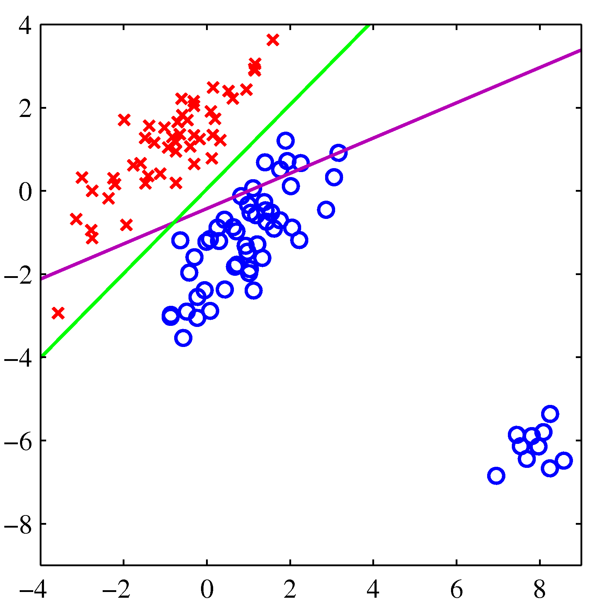
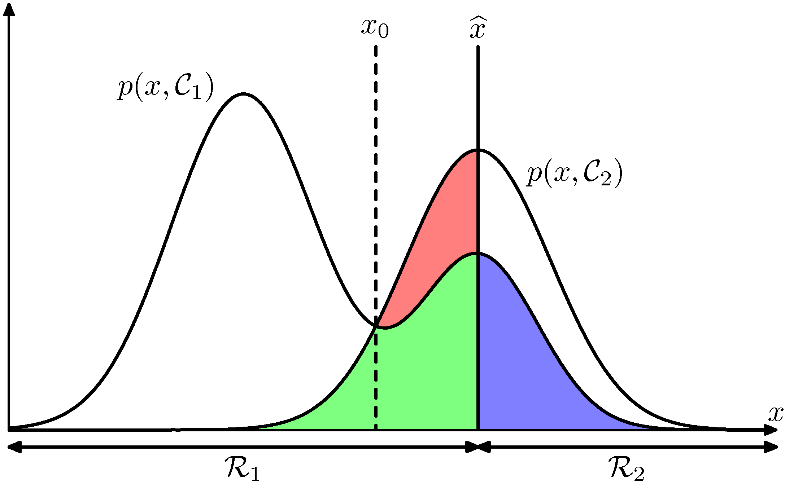
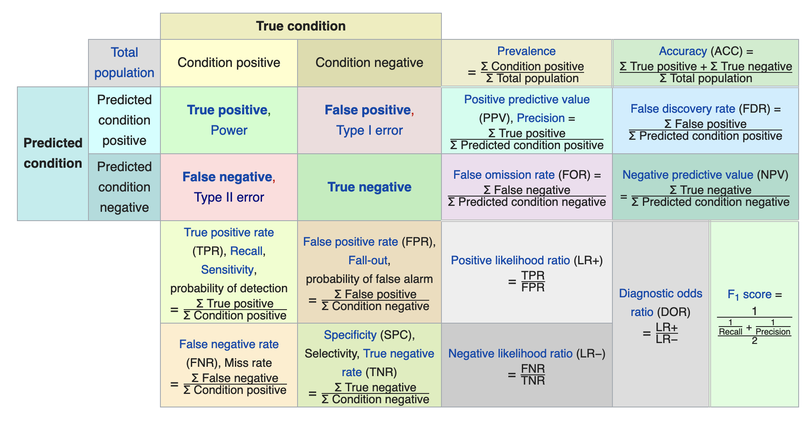

Linear Classification
This section captures the main principles of linear classification which is a fundamental ability for the perception system of an AI agent.
Classification Principle
There are three broad classes of methods for determining the parameters $\mathbf{w}$ of a linear classifier:
-
Discriminative Models, which form a discriminant function that maps directly test data $\mathbf{x}$ to classes $\mathcal{C}_k$. In this case, probabilities play no role. Examples include the Perceptron and Support Vector Machines (SVMs).
-
Probabilistic Discrimitative Models, First solve the inference problem of determining the posterior class probabilities $p(\mathcal{C}_k|\mathbf{x})$ and then subsequently assign each new $\mathbf{x}$ to one of the classes. Approaches that model the posterior probabilities directly are called discriminative models. Examples of discriminative training of linear classifiers include:
- Logistic regression—maximum likelihood estimation of $\mathbf{w}$ assuming that the observed training set was generated by a binomial model that depends on the output of the classifier.
-
Probabilistic Generative Models, which infer the posterior $p(\mathcal{C}_k|\mathbf{x})$ using Bayessian approach and we therefore generate the class-conditional density $p(\mathbf{x}|\mathcal{C}_k)$ and the prior $p(\mathcal{C}_k)$. Examples of such algorithms include:
- Linear Discriminant Analysis (or Fisher’s linear discriminant) (LDA)—assumes Gaussian conditional density models
- Naive Bayes classifier with multinomial or multivariate Bernoulli event models.
Discriminative Models
 Synthetic Dataset with multiple discriminant functions
-
The learning algorithm is asked to assign the input vector $\mathbf{x} \in \mathbb{R}^n$ to one of the $k$ classes. The learning algorithm will need to produce a function $\mathbf{y}=g(\mathbf{x})$ also called discriminant function.
-
In binary classification, the target variable (label) $y$ belongs to either of the two classes ${\mathcal{C}_1, \mathcal{C}_2}$ - for multi-class it is taking a value out of a finite set of classes. Contrast this to regression where $y$ is taking any value out of a infinite possible set of values ($y \in \mathbb{R}$). For example, we can choose convenient labels $y=0$ for class $\mathcal{C}_1$, and $y=1$ for class $\mathcal{C}_2$.
-
The Bayesian setting is now very handy, $ p(\mathcal{C}_k|\mathbf{x}) = \frac{p(\mathbf{x}|\mathcal{C}_k)p(\mathcal{C}_k)}{p(\mathbf{x})}$ where $p(\mathcal{C}_k)$ is the prior probability for the corresponding class. The equation above is similar to what we have seen in regression, and can be used to update the posterior probability $p(\mathcal{C}_k|\mathbf{x})$ given the likelihood function, prior and evidence. As an example, we look at the CT-scan of a patient and obtain the posterior probability based on the formula above and can now diagnose the patient as a cancer free if $p(\mathcal{C}_0|\mathbf{x}) > p(\mathcal{C}_1|\mathbf{x})$ where $\mathcal{C}_0$ is the cancer free class.
 Joint probabilities involved in binary classification. By sweeping the discrimination function (which in this example is the threshold $\hat{x}$) left or right we are adjusting the areas shown as red blue and green that are the main determinants of classifier performance.
Receiver Operating Curve and Classification Metrics
Obviously the criticality of estimating the right posterior for the treatment of the patient is very high - we have therefore developed metrics that gauge such detection. It is extremely important to understand the Receiver Operating Curve that gives raise to many classification quality metrics. Where the name comes from? The top of this page is decorated by a photo of one of the hundreds of RADAR towers installed in England just before the WWII. The job of the RADAR was to detect incoming Nazi air bombings. RADAR was one of the key technologies that won the war (the other was cryptography).
Let us consider a two-class prediction problem (binary classification), in which the outcomes are labeled either as positive (p) or negative (n). There are four possible outcomes from a binary classifier. If the outcome from a prediction is p and the actual value is also p, then it is called a true positive (TP); however if the actual value is n then it is said to be a false positive (FP). Conversely, a true negative (TN) has occurred when both the prediction outcome and the actual value are n, and false negative (FN) is when the prediction outcome is n while the actual value is p.
To get an appropriate example in a real-world problem, consider a diagnostic test that seeks to determine whether a person has a certain disease. A false positive in this case occurs when the person tests positive, but does not actually have the disease. A false negative, on the other hand, occurs when the person tests negative, suggesting they are healthy, when they actually do have the disease.
Let us define an experiment from P positive instances and N negative instances for some condition. The four outcomes can be formulated in a 2×2 contingency table or confusion matrix, as follows:
 Joint probabilities and ROC Curve (Wikipedia)
Joint probabilities and ROC Curve (Wikipedia)
 Confusion Matrix (Wikipedia)
For an instructional example of determining the confusion matrix of classification models using scikit-learn see the Iris case study.